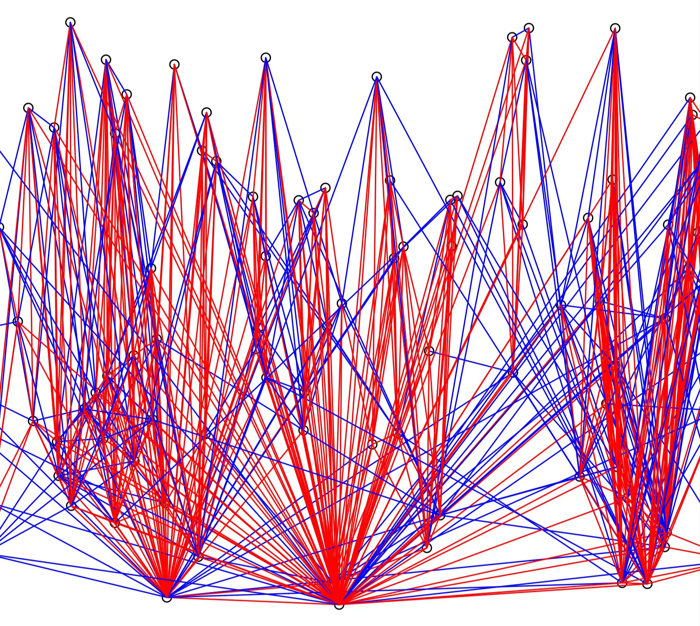
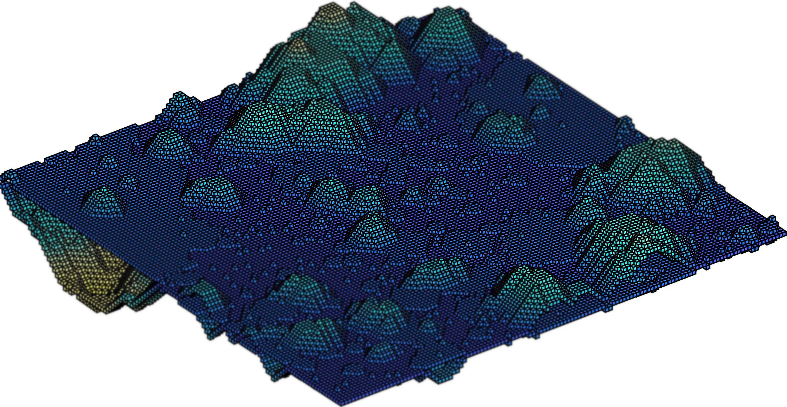

Current Work
My research explores geometric random graphs,  their implications for random processes. I also study dependent percolation using multi-scale techniques. Publications and preprints can be found below. You can also check my arXiv or ORCiD pages.
Submitted papers/Preprints
- Chemical distance in the Poisson Boolean model with regularly varying diameters
with Marilyn Korfhage, arXiv:2503.18577 - Robustness in the Poisson Boolean model with convex grains
with Marilyn Korfhage and Peter Mörters, arXiv:2410.13366 - Geometric scale-free random graphs on mobile vertices: broadcast and percolation times
with Arne Grauer, arXiv:2404.15124
Published/Accepted papers
- Finiteness of the percolation threshold for inhomogeneous long-range models in one dimension
with Lukas Lüchtrath and Christian Mönch, arXiv:2203.11966 - Lipschitz cutset for fractal graphs and applications to the spread of infections
with Alexander Drewitz and Gioele Gallo, Annales de l’Institut Henri Poincaré, Probabilités et Statistiques, to appear - The contact process on scale-free geometric random graphs
with Arne Grauer, Stochastic Processes and their Applications, Volume 173: 104360 (2024) - The Emergence of a Giant Component in One-Dimensional Inhomogeneous Networks with Long-Range Effects
with Lukas Lüchtrath and Christian Mönch, Algorithms and Models for the Web Graph, WAW 2023: 19–35 (2023) - Chemical distance in geometric random graphs with long edges and scale-free degree distribution
with Arne Grauer and Peter Mörters, Communications in Mathematical Physics, 395: 859-906 (2022) - Recurrence versus Transience for Weight-Dependent Random Connection Models
with Markus Heydenreich, Christian Mönch and Peter Mörters, Electronic Journal of Probability, 27: 1-31 (2022) - Percolation phase transition in weight-dependent random connection models
with Lukas Lüchtrath and Peter Mörters, Advances in Applied Probability, 53(4), 1090-1114 (2021)
Part of the June 2025 Applied Probability Collection on the topic of "Phase Transitions". - Transience Versus Recurrence for Scale-Free Spatial Networks
with Markus Heydenreich, Christian Mönch and Peter Mörters, Algorithms and Models for the Web Graph, WAW 2020: 96–110 (2020) - The age-dependent random connection model
with Arne Grauer, Lukas Lüchtrath and Peter Mörters, Queueing Syst, 93: 309-331 (2019) - Multi-scale Lipschitz percolation of increasing events for Poisson random walks
with Alexandre Stauffer, Annals of Applied Probability, 29: 376-433 (2019) - Random walks in random conductances: decoupling and spread of infection
with Alexandre Stauffer, Stochastic Processes and their Applications, 129: 3547-3569 (2019) - Percolation of Lipschitz surface and tight bounds on the spread of information among mobile agents
with Alexandre Stauffer, APPROX-RANDOM 2018, 39: 1-17 (2018)
My co-authors
Alexander Drewitz, Gioele Gallo, Arne Grauer, Markus Heydenreich, Marilyn Korfhage, Lukas Lüchtrath, Christian Mönch, Peter Mörters, Alexandre Stauffer
Some conferences/workshops where I have given a talk
- Long-range phenomena in Percolation, Cologne, Germany
- Stochastic Geometry in Action, Bath, UK
- Dynamic spatial random systems, Berlin, Germany
- Recent Trends in Spatial Stochastic Processes, Eindhoven, Netherlands
- Random Geometric Systems: First Annual Conference, Berlin, Germany
- Spatial Networks and Percolation, Oberwolfach, Germany
- YEP XV "Information Diffusion on Random Networks", Eindhoven, Netherlands
- APPROX/RANDOM 2018, Princeton, USA
- Strongly Correlated Random Interacting Processes, Oberwolfach, Germany